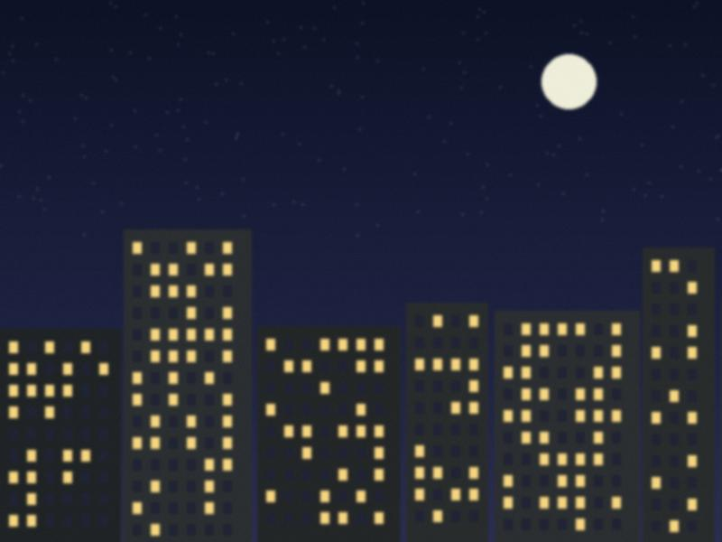

the old cinema, tuesday evening. mr mamatov turning the motor of the second projector by hand.the paper sent me with daniyar osmonov, who wrote the long story about the projectionist (his blog is Long Way Round, here on kündölük). he writes slowly and he is very polite. he asked mr mamatov if i could take a photograph from the corner of the booth where the light from the window falls on the lens.
mr mamatov said: "only if you take your shoes off." we all took our shoes off. there's no film for the projectors anymore, but the floor of the booth is still treated like a place where something is shown.
98 notes
Nazira, your photograph is better than three of my paragraphs. The editor prints both.
daniyar, the editor printed the paragraphs smaller.
Comments are closed.